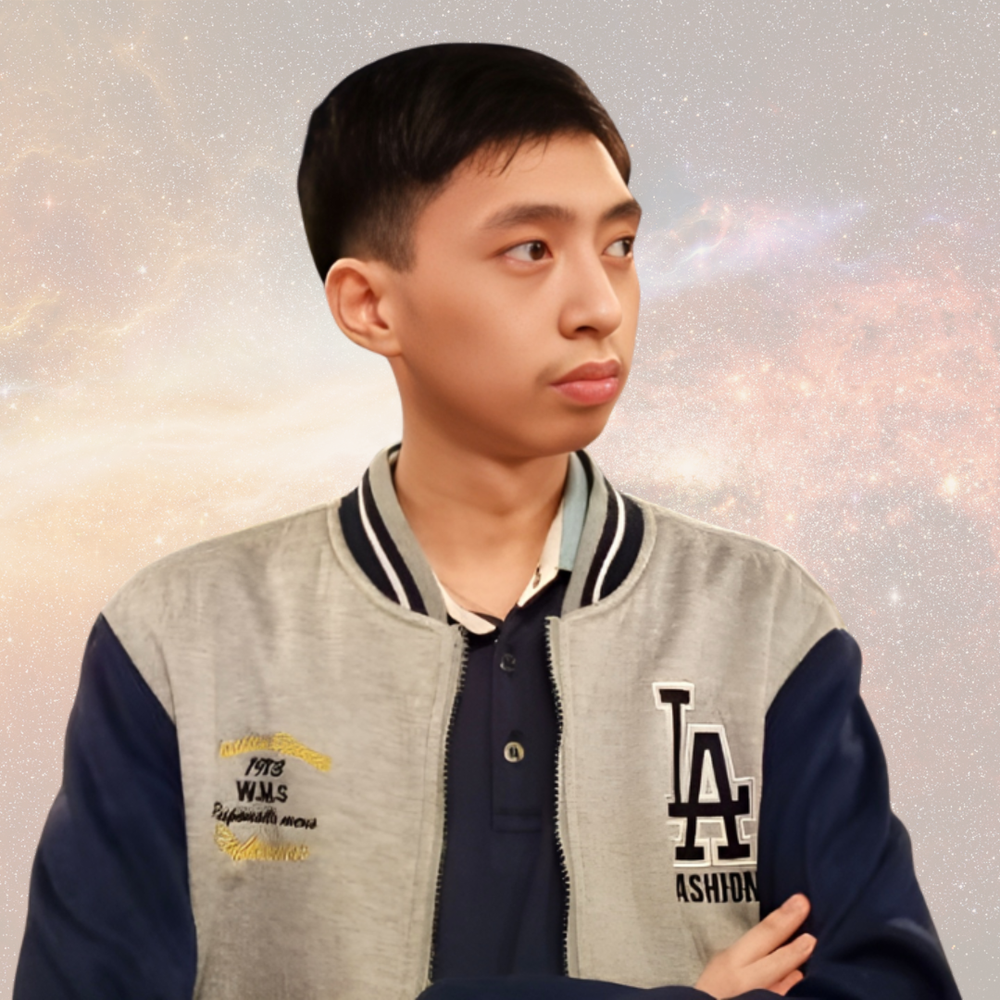

A person behind
the universe.
More than a profile, this is a glimpse into the person behind the photographs, edits, interests, and stories that make Cedric's universe his own.

CEDRIC
REYES
A BSIT student from ICCT Cainta, Pasig City, with a creative side shaped by photography, digital editing, gaming, exploration, and curiosity.
Curious by nature.
Creative by choice.
Cedric's interests move across different worlds — from taking photographs and creating digital edits to exploring games, places, music, and visual ideas. Each interest becomes another orbit in a larger creative universe.
Technology gives him a space to build. Photography gives him a way to notice. Editing gives him a way to imagine. Together, they create a personal archive of moments and ideas.
Keep exploring.
Keep creating.
The universe grows every time a new moment is captured, a new idea is created, or a new world is discovered.
VIEW THE COLLECTION ↗